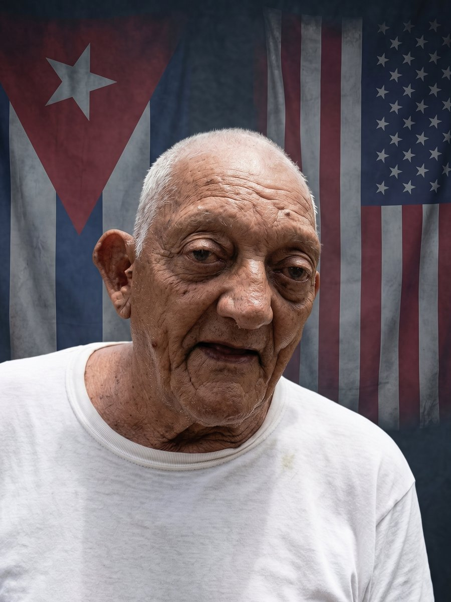

Expediente EXP-002 · Preso político

- NOMBRE:
- Miguel Díaz Bauzá
- EDAD:
- 83 años
- ORIGEN:
- Caibarién, Villa Clara
- PRISIÓN:
- Campamento La 2, Remedios
- CONDENA:
- 36 años (acumulada)
Miguel Díaz Bauzá (a veces escrito como Bouza) es ampliamente considerado como uno de los presos políticos más antiguos, longevos y emblemáticos en la historia contemporánea de Cuba.
¿Quién es Miguel Díaz Bauzá?
Nacido en Caibarién, Villa Clara, es un cubano que emigró a los Estados Unidos en 1980. Sin embargo, movido por el deseo de luchar contra el gobierno cubano y buscar un cambio político para su país, decidió regresar a la isla.
Su captura y condena
En octubre de 1994, Díaz Bauzá formó parte de una pequeña expedición armada de exiliados que desembarcó en las costas de Cuba, en la zona de Villa Clara, con el objetivo de iniciar un levantamiento. Fueron interceptados por las fuerzas de seguridad del Estado.
Díaz Bauzá fue juzgado bajo cargos de "atentado contra la seguridad del Estado", "rebelión" y "terrorismo", por los que inicialmente recibió una dura condena de 30 años de prisión.
El amotinamiento de 1999
Su tiempo en prisión se extendió tras un incidente ocurrido en 1999 en el penal de Camagüey. Díaz Bauzá participó en una sonada protesta por los abusos y el trato inhumano que recibían los reclusos. Como represalia por este amotinamiento y bajo acusaciones de insubordinación, las autoridades cubanas lo condenaron a 20 años más; ambas causas se unificaron en una sentencia acumulada de 36 años de privación de libertad. Tras esto, pasó casi una década en un régimen de aislamiento riguroso y privado de visitas.
Situación actual y salud
- Edad: Tiene 83 años de edad y ha pasado más de 32 años tras las rejas.
- Ubicación: Actualmente se encuentra en el "Campamento la 2", un centro de menor rigor ubicado en Remedios, Villa Clara, donde se le permiten pases ocasionales de corta duración para visitar a su familia.
- Salud: Décadas de encarcelamiento en precarias condiciones han mermado gravemente su salud. Padece de hipertensión crónica, diabetes, problemas renales y vitíligo, condiciones difíciles de tratar adecuadamente en prisión.
- Terminación de condena: De no recibir un indulto o liberación anticipada por motivos humanitarios, su fecha de liberación oficial está prevista para el 15 de octubre de 2030.
Su legado
Para las organizaciones disidentes y de derechos humanos como Prisoners Defenders, Díaz Bauzá es un símbolo de enorme resistencia. Su familia, especialmente su hija Karen María León Alfonso, ha mantenido una campaña constante exigiendo su liberación debido a su avanzada edad, destacando que, a pesar del encierro, sigue siendo un hombre de profundas convicciones democráticas.